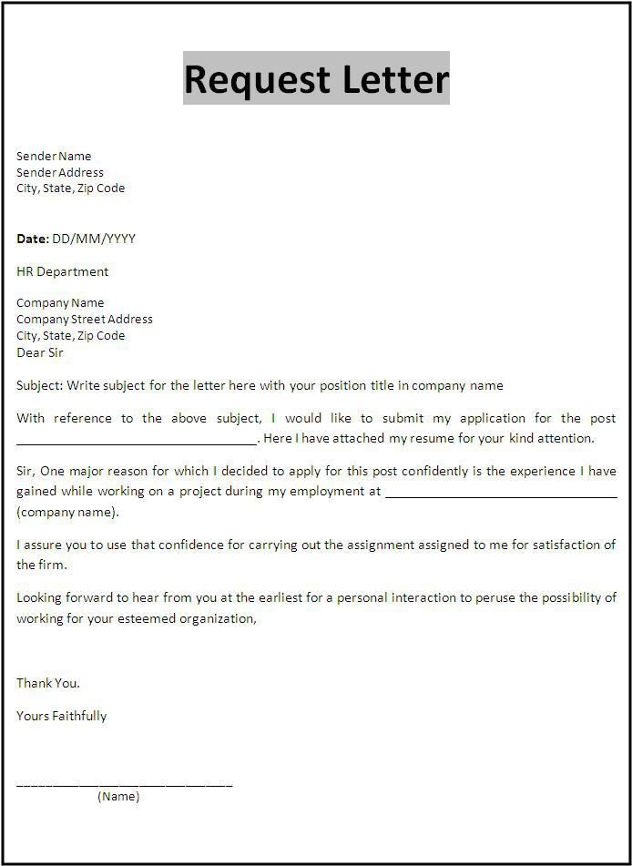
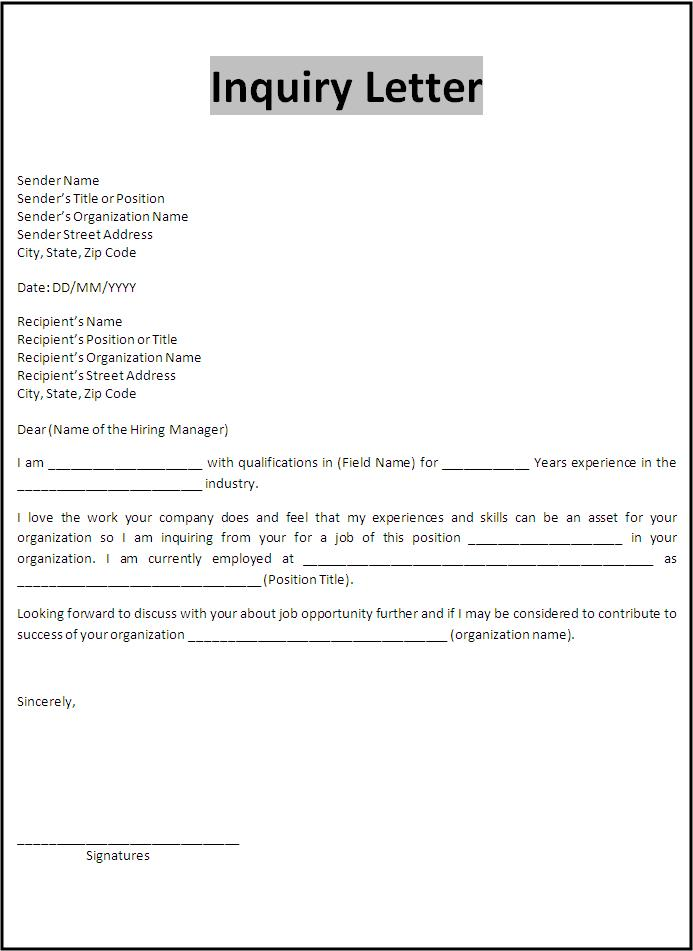
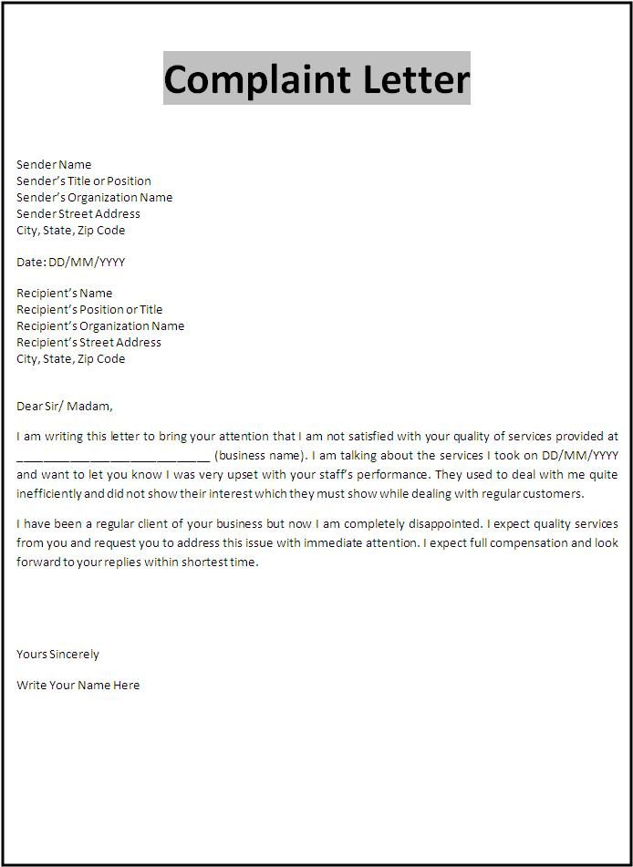
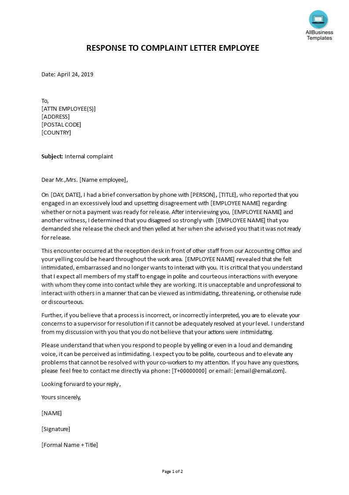
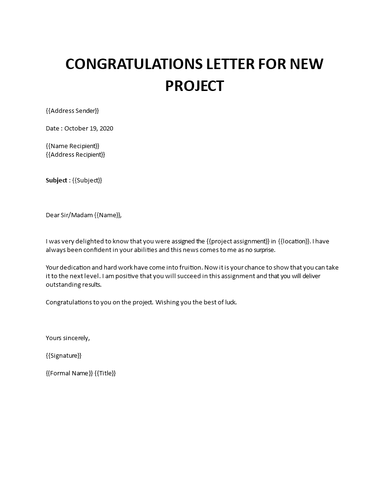
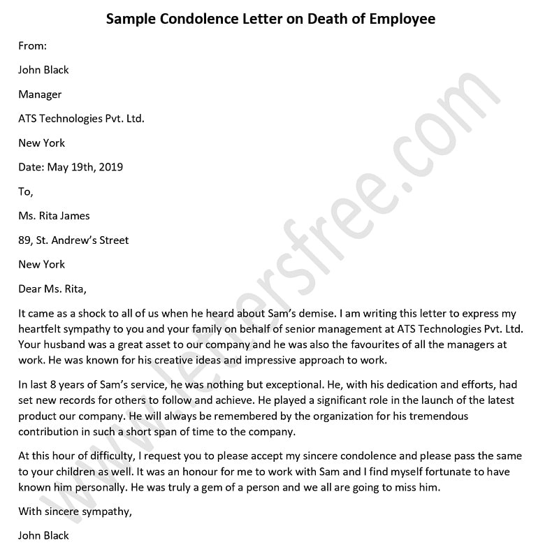

Formal Letters
Writing letters today, among friends and relations, is considered a practice in antiquity. The use of modern
technology keeps us away from it.
However writing letters is still in practice in the government sector and in
the corporate world in the communication of official, legal and confidential maters. A business letter acts as
an ambassador for a government institution, a company or an NGO, it is vital that it gives a good first
impression.
Therefore, learning to write formal / business / official letters is very useful in this competitive
world.
In formal letter writing scenario, we have to follow some imporatnt tips to make its' organization.
- Keep to the 5 ‘C’s in communication: correctness, conciseness, clarity, completeness and courtesy.
- Use appropriate tone:
This depends on the choice of the writer’s words. The writer communicates his/her message but cannot help showing his/her emotional attitude towards the reader through his/her choice of words in conveying the message.
E.g. If the writer is angry about the receiver, he may use words that imply anger. Thus the writer’s message may sound angry, friendly, formal, persuasive, aggressive, humorous, sarcastic or offensive. Even if you are unhappy about your business partner, customer, client or your professional advisor, you must not use any impolite terms or words carrying derogatory or unpleasant meanings.
People also sometimes use old, out dated and obsolete expressions. Again a set of active voice words bluntly accusing the receiver may sound decent in the passive voice. Considering all these matters, you can use modern, simple and more polite terms.
Some examples are: - The opening of a business letter may include a subject line (subject heading) (topic) that refers to
previous correspondence or it may be a summary of the content of the message. The subject line should not
be a complete sentence.
Eg-:
- Frequent power failures in the area
- Renovation of the building
- Resignation with two months’ notice
- Closing the campus to prevent the spread of chickenpox
- The opening sentence will state the reason for the communication. It is important because it sets the tone
of the letter and creates the first impression. (It is like the thesis statement of an essay).
A few examples:
- Thank you for your resume and the cover letter dated 14th March 2018 for the post of a lecturer.
- I am writing to inquire about the upcoming IELTS exam dates.
- I am writing in connection with the prices of your smartphones.
- Thank you for your interest in opening a current account in our bank.
- I am writing to inform you about the loss of my passport.
- Thank you for your inquiry dated 6th May 2019 in which you asked us about our range of prices for printing.
- books and anthologies of a variety of sizes.
- I am a student of your campus and am currently following the MBA programme.
- The body is the main part of your letter. Usually there are 4 paragraphs in the body. In the body, the writer has to make his/her points clearly, in a logical sequence. The contents in the paragraphs depend on the type of the letter.
E.g.:- A letter of request / inquiry:
- Introductory paragraph.
- Explain the situation.
- Details of your request / inquiry.
- Closing paragraph.
- A letter of information:
- Introductory paragraph.
- Giving information.
- Giving more information.
- Closing paragraph.
- A letter of Complaint:
- Introductory paragraph.
- Explain the problem.
- Explain more with examples
- Say what you think the reader should do (Closing paragraph).
- A letter answering a complaint:
- Introductory paragraph (expressing regret)
- Explain how the mistake occurred.
- Mention the action taken/ to be taken to rectify the mistake.
- A closing Apology /Assurance of not repeating the mistake.
- A letter of apology:
- Introductory paragraph.
- Explain why you must apologise.
- Alternative plan.
- Closing paragraph.
- A letter of invitation for a conference:
- Mention the function/location/date/participants.
- The title of the speech/timing/payments.
- Details of programme/ accommodation if necessary.
- Request confirmation/details of any equipment needed.
- A reply to an invitation
- Express thanks.
- Acceptance and confirmation.
- Mention any equipment needed.
- Closing.
- A letter of congratulations
- Offer congratulations/reason.
- Express pleasure/ how you shared the joy with others.
- Wish for a better future.
- A letter of condolence
- Express sympathy.
- Express regret for being unable to attend personally/Give a reason.
- Appreciate the deceased person on some aspects/ how his loss will be felt.
- Console the reader with some nice words.
Format of a formal letter

    

 
| Instead of | You can write |
|---|---|
| We cannot do anything about your problem | unfortunately we are unable to help you on this occasion |
| I am writing to complain because I am very unhappy with the way I was treated in your office this morning. | I am most unhappy with the standard of service offered in your office this morning |
| We acknowledge receipt of your letter of 14th May. | Thank you for your letter of 14th May |
| Enclosed herewith you find a message from the president | I enclose a message of the president |
| Please be good enough to advise me. | Please let me know |
| We shall be in a position to | We shall be able to |
| We maintain that you are responsible for the damages and you have to pay for the damages immediately | We expect that the damages incurred on your side may be compensated as soon as possible. |
| You had closed the office before the normal closing hour | The office had been closed before the normal closing hour |
| You have given me the wrong information | I have been given the wrong information |
| I presume that you have made a mistake and have included part of another order in the consignment. | I presume that a mistake has been made and a part of another order has been included in the consignment. |